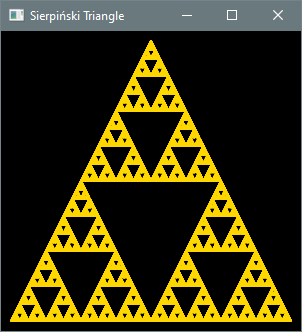

6.2 for Loops
Key terms: loop control variable
6.2.1 Syntax and Semantics
The following code uses a while loop to output a sequence of 20 asterisks. The variable i is
referred to as a loop control variable: its value is updated in a consistent way in each
iteration, and once it attains a certain value the loop ends.
int i = 0;
while (i < 20) {
System.out.print("*");
i++;
}
Not every loop involves the use of a loop control variable. For example, the loop in the
GamblersRuin program from the previous section continues while the gambler's balance is greater
than zero, but the balance fluctuates unpredictably. When a loop control variable is used, there are
three basic steps involved in its management: initializing the variable, testing the condition to
continue looping (which depends on the variable's current value), and updating the variable. A for
loop enables the code for these three steps to be written together on the same line for compactness
and improved readability. The preceding code may be written as:
for (int i = 0; i < 20; i++) {
System.out.print("*");
}
The general syntax of a for loop is:
for (S1; E; S2) {
// body
}
true, the body is
executed and then statement S2 is executed (which typically updates the loop-control
variable). The flow of execution then returns to the evaluation step. If E is false,
execution continues with the code following the loop.
Listing 6.2.1a is a revision of the Summer program from the previous section using a for loop
instead of a while loop.
Listing 6.2.1a - Summer.java
package chap06.sect2;
import java.util.Scanner;
/**
* Calculates the sum of consecutive positive integers up to a user-specified limit.
*
* @author Drue Coles
*/
public class Summer {
public static void main(String[] args) {
System.out.print("Enter a positive integer: ");
Scanner in = new Scanner(System.in);
final int limit = in.nextInt();
int sum = 0;
for (int next = 1; next <= limit; next++) {
sum += next;
}
System.out.printf("1 + 2 + 3 + ... + %,d = %,d %n", limit, sum);
}
}
Listing 6.2.1b is a less trivial but still simple application. It approximates the value of π by calculating partial sums of an infinite series familiar to students of calculus. The Unicode character for the Greek letter π is used as a variable name and as part of the program’s output.
Listing 6.2.1b - PiApproximator.java
package chap06.sect2;
/**
* Approximates the value of π using the Leibniz series: π = 4 - 4/3 + 4/5 - 4/7 + 4/9 - ...
*
* @author Drue Coles
*/
public class PiApproximator {
public static void main(String[] args) {
final int n = 100_000_000; // number of terms of the series to add
double piApprox = 0.0; // sum of terms
int denominator = 1; // denominator of current term
int sign = 1; // sign of current term
// compute the n-th partial sum (the sum of the first n terms)
for (int i = 0; i < n; i++) {
piApprox += sign * 4.0 / denominator; // add next term
denominator += 2;
sign = -sign;
}
// A double-precision floating-point number has about 16 decimal digits of precision, but
// the last digit may be unreliable due to binary rounding, so 15 is specified.
String label1 = String.format("Leibniz series approximation (%,d terms)", n);
String label2 = "Double-precision floating-point value nearest to π";
System.out.printf("%50s: %.15f %n", label1, piApprox);
System.out.printf("%50s: %.15f %n", label2, Math.PI);
}
}
Output 6.2.1b
Leibniz series approximation (100,000,000 terms): 3.141592643589326
Double-precision floating-point value nearest to π: 3.141592653589793
6.2.2 Case Study: Game of Craps
Craps is an old single-player dice game that is still played in casinos. In fact, it offers the player the highest probability of winning among all common casino games. That probability is less than 50% of course, but as we will see later, it is close. Chapter 5 presented several versions of a program that simulates the first roll of the game, but now with loops in our repertoire, we can carry out the game to its conclusion. Listing 6.2.2 is a complete Craps-playing program. The rules are described in the class documentation.
Listing 6.2.2 - Craps.java
package chap06.sect2;
import java.util.concurrent.ThreadLocalRandom;
/**
* Plays the game of Craps. The player rolls two dice. There are three possibilities for the
* come-out roll:
* 1. Natural (7 or 11) - player wins.
* 2. Craps (2, 3, or 12) - player loses.
* 3. In any other case, the player continues rolling until:
* a. Rolling the original sum (the point) - player wins.
* b. Rolling a 7 (seven out) - player loses.
*
* @author Drue Coles
*/
public class Craps {
public static void main(String[] args) {
// come-out roll
ThreadLocalRandom rand = ThreadLocalRandom.current();
int die1 = rand.nextInt(1, 7);
int die2 = rand.nextInt(1, 7);
final int comeOutRoll = die1 + die2;
System.out.printf("%d + %d = %d %n", die1, die2, comeOutRoll);
// check if player wins or loses on come-out roll
if (comeOutRoll == 7 || comeOutRoll == 11) {
System.out.println("Natural. You win.");
return;
}
if (comeOutRoll == 2 || comeOutRoll == 3 || comeOutRoll == 12) {
System.out.println("Craps. You lose.");
return;
}
System.out.printf("The point is %d. %n", comeOutRoll);
int roll = 0; // ensures loop executes at least once
// keep rolling until player matches point or rolls seven
while (roll != comeOutRoll && roll != 7) {
die1 = rand.nextInt(1, 7);
die2 = rand.nextInt(1, 7);
roll = die1 + die2;
System.out.printf("%d + %d = %d %n", die1, die2, roll);
}
if (roll == comeOutRoll) {
System.out.println("You rolled the point. You win.");
} else {
System.out.println("Seven out. You lose.");
}
}
}
Output 6.2.2a
2 + 5 = 7
Natural. You win.
Output 6.2.2b
1 + 2 = 3
Craps. You lose.
Output 6.2.2c
3 + 2 = 5
The point is 5.
1 + 5 = 6
3 + 1 = 4
4 + 6 = 10
4 + 1 = 5
You rolled the point. You win.
Output 6.2.2d
5 + 5 = 10
The point is 10.
3 + 1 = 4
1 + 5 = 6
2 + 2 = 4
4 + 1 = 5
1 + 6 = 7
Seven out. You lose.
6.2.3 Case Study: Fractal Generator
A Sierpiński triangle is a fractal that can be constructed in the following way.
Start with an equilateral triangle. Partition it into four smaller congruent equilateral triangles and remove the one in the center. Repeat this process for each of the remaining triangles.
Figure 6.2.3: First five iterations
{kind=link}
Amazingly, the same result can be obtained using randomness in a way that is much easier to program. Start by fixing three corners of a triangle, then repeat the following steps:
- choose a random corner
- move halfway from current point toward that corner
- draw a dot at the new location
You would probably not expect anything other than an unstructured smear of dots to arise from this process, but after many repetitions the very delicate structure of a Sierpiński triangle begins to emerge. Listing 6.2.3 is a JavaFX application that performs these steps to draw the fractal. This application is a bit longer and more involved than earlier ones, but the documentation clarifies the coding logic. You might enjoy experimenting with the dot size and the number of dots.
Listing 6.2.3 - Fractal.java
package chap06.sect2;
import javafx.application.Application;
import javafx.geometry.Point2D;
import javafx.scene.Scene;
import javafx.scene.layout.Pane;
import javafx.scene.paint.Color;
import javafx.scene.shape.Circle;
import javafx.stage.Stage;
import java.util.concurrent.ThreadLocalRandom;
/**
* Draws a Sierpiński triangle.
*
* @author Drue Coles
*/
public class Fractal extends Application {
@Override
public void start(Stage stage) {
Pane root = new Pane();
final int size = 300;
Scene scene = new Scene(root, size, size, Color.BLACK);
// three corners of a triangle
final int padding = 10;
final Point2D corner1 = new Point2D(size / 2.0, padding);
final Point2D corner2 = new Point2D(padding, size - padding);
final Point2D corner3 = new Point2D(size - padding, size - padding);
// fractal creation can begin at any point
Point2D currentPoint = new Point2D(size / 2.0, size / 2.0);
// 1. choose a random corner
// 2. move halfway from current point toward that corner
// 3. draw a dot at the new location
final int numDots = 100_000;
for (int i = 0; i < numDots; i++) {
Point2D randomCorner = randomCorner(corner1, corner2, corner3);
currentPoint = midpoint(currentPoint, randomCorner);
// draw a dot at location of current point
Circle dot = new Circle(currentPoint.getX(), currentPoint.getY(), 1, Color.GOLD);
root.getChildren().add(dot);
}
stage.setTitle("Sierpiński Triangle");
stage.setScene(scene);
stage.show();
}
/**
* Returns one of three given points selected at random.
*/
private static Point2D randomCorner(Point2D a, Point2D b, Point2D c) {
return switch (ThreadLocalRandom.current().nextInt(3)) {
case 0 -> a;
case 1 -> b;
default -> c;
};
}
/**
* Returns the midpoint of the line segment connecting p and q.
*/
private static Point2D midpoint(Point2D p, Point2D q) {
return new Point2D(
(p.getX() + q.getX()) / 2,
(p.getY() + q.getY()) / 2
);
}
public static void main(String[] args) {
launch(args);
}
}
Output 6.2.3
